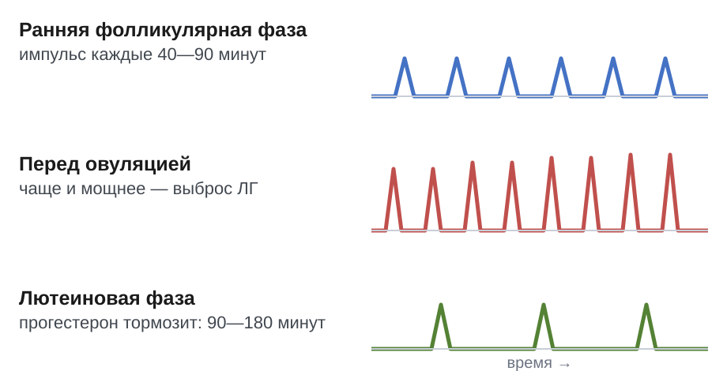

Физиология репродуктивной системы: регуляция, гормоны, физиологическая активность
Иерархическая пятиуровневая система регуляции репродуктивной функции
Репродуктивная ось — это слаженная система органов и нейроэндокринных структур, управляющая созреванием половых клеток и выработкой стероидных гормонов. Её работа построена по принципу подчинения нижележащих звеньев вышележащим с одновременным контролем по механизму обратной связи. В клинической гинекологии эту структуру традиционно описывают как пять уровней регуляции, или пятиуровневую регуляцию.

В учебной литературе направления отсчёта различаются. Так, по классификации Г. М. Савельевой иерархию ведут сверху вниз — от высших нервных центров к органам малого таза. В руководстве Э. К. Айламазяна, напротив, отсчет идет снизу вверх — от периферических тканей к коре мозга. Независимо от порядка счета, функциональная последовательность импульсов остаётся единой: от центральной нервной системы к тканям-мишеням.
Первый уровень представлен корой головного мозга и экстрагипоталамическими центрами, в число которых входят лимбическая система и гиппокамп. Эти структуры воспринимают внешние стимулы и сигналы внутренней среды организма, преобразуя их в химические импульсы с помощью нейромедиаторов и нейропептидов.[лекция, с. 81]
Влияние этих веществ разнонаправленно. Например, ацетилхолин и ГАМК усиливают выброс рилизинг-гормонов, тогда как дофамин, серотонин и эндогенные опиоидные пептиды угнетают их секрецию.[Савельева, с. 40]
Второй уровень — гипофизотропная зона гипоталамуса, состоящая из скоплений нейронов вентромедиальных, дорсомедиальных и аркуатных ядер. Нейросекреторные клетки этих ядер вырабатывают декапептид — гонадотропин-рилизинг-гормон (ГнРГ, гонадолиберин) и выделяют его в портальную сосудистую систему гипофиза.[Айламазян, с. 33]
Секреция ГнРГ происходит не непрерывно, а в импульсном режиме. В фолликулярную фазу цикла пики выброса возникают часто: 1 раз в 40—90 мин. К овуляции их частота и амплитуда возрастают, а в лютеиновой фазе снижаются до 1 раза в 90—180 мин.[Айламазян, с. 33]
Третий уровень образует передняя доля гипофиза — аденогипофиз. Клетки-гонадотрофы синтезируют и секретируют гонадотропины — гормоны белковой природы, избирательно направляющие работу половых желез. К ним относятся фолликулостимулирующий гормон (ФСГ, фоллитропин) и лютеинизирующий гормон (ЛГ, лютропин), а также функционально связанный с репродукцией пролактин.[Айламазян, с. 32]
Четвертый уровень — яичники, выполняющие генеративную и гормональную функции. Генеративная функция заключается в росте фолликулов и овуляции зрелой яйцеклетки, а гормональная — в продукции стероидов: эстрогенов, прогестерона и андрогенов.
Пятый уровень образуют органы-мишени репродуктивной системы. Это ткани организма, клетки которых содержат специфические цитозольные и ядерные рецепторы к половым стероидам и реагируют на циклические изменения их концентрации. К половым органам-мишеням относятся эндометрий и миометрий матки, маточные трубы и слизистая оболочка влагалища.[Савельева, с. 48]
Помимо репродуктивного тракта, рецепторы к эстрогенам и прогестерону несут неполовые ткани. К ним относятся молочные железы, волосяные фолликулы, кости и жировая ткань.[Савельева, с. 48]
Механизмы обратной связи и нейрохимический контроль репродуктивной оси
Репродуктивная система работает как трехэтажная вертикаль: гипоталамус, аденогипофиз и яичники. Прямой сигнал спускается сверху вниз. Нейроны гипоталамуса вырабатывают гонадотропный рилизинг-гормон (ГнРГ, или гонадолиберин). Он побуждает переднюю долю гипофиза выделять гонадотропины — фолликулостимулирующий (ФСГ) и лютеинизирующий (ЛГ) гормоны.
Затем гонадотропины с током крови достигают яичников, где стимулируют созревание фолликулов и секрецию половых стероидов. Обратный же контроль поднимается снизу вверх сразу по трем кругам регуляции.[Савельева, с. 48]
Самый протяженный путь — длинная петля обратной связи: это влияние эстрогенов и прогестерона яичников на гипофиз и гипоталамус. Путь покороче связывает между собой только два верхних этажа. В этой короткой петле концентрация ФСГ и ЛГ в крови меняет активность гипоталамических ядер.
Наконец, ультракороткая петля обратной связи замыкается внутри одного уровня. Здесь гонадолиберин напрямую действует на выделившие его нейроциты гипоталамуса, регулируя собственный синтез.[Айламазян, с. 34]
Интуитивно кажется, что рост концентрации периферического гормона обязан подавлять вышележащий центр. В эндокринологии это базовое правило отрицательной связи, но в женском цикле оно соблюдается не всегда. В раннюю фолликулярную фазу низкий уровень эстрадиола стимулирует выделение ФСГ гипофизом — так работает отрицательная обратная связь, необходимая для старта созревания фолликулов.[Айламазян, с. 34]
Однако перед овуляцией логика меняется на противоположную. Зреющий фолликул выбрасывает в кровь критически высокую дозу эстрадиола. Этот предовуляционный всплеск запускает положительную обратную связь: гипофиз отвечает массивным овуляторным выбросом ЛГ и ФСГ. А если бы этот механизм оставался отрицательным, гипофиз заблокировал бы гонадотропины, и овуляция попросту не наступала бы.
Импульсный выброс ГнРГ в гипоталамусе задают вышележащие нейромедиаторы. Стимулирующими проводниками здесь выступают ацетилхолин и норадреналин, которые ускоряют ритм пульсации гонадолиберина. Тормозят систему другие вещества: в частности, серотонин снижает амплитуду и уменьшает частоту выбросов ГнРГ.
Подавляют данную выработку и эндогенные опиоидные пептиды — эндорфины, энкефалины и динорфины. В отношении гамма-аминомасляной кислоты (ГАМК) эффекты устроены сложнее: в большинстве отделов мозга она служит главным тормозным агентом, однако в гипоталамической регуляции ГнРГ способна проявлять стимулирующее действие.[Савельева, с. 40]
Гипоталамический контроль: пульсирующий выброс ГнРГ и секреция пролактина
В регуляции половой системы гипоталамус служит ключевым координирующим центром. В нейронах его аркуатных ядер, расположенных в медиобазальном гипоталамусе, синтезируется гонадотропин-рилизинг-гормон (ГнРГ, или гонадолиберин). Интуитивно кажется, что этот гормон должен поступать в кровеносное русло непрерывно, поддерживая постоянный уровень стимуляции.

Однако непрерывный приток ГнРГ полностью блокирует работу гипофиза. В таких условиях рецепторы гонадотрофов теряют чувствительность, поэтому выделение гонадотропинов прекращается. Для нормального функционирования репродуктивной оси требуется выброс порциями — цирхоральная секреция (от латинского circa — около, hora — час), то есть импульсное выделение гормона с интервалом около одного часа.
Ритм работы этого генератора импульсов закономерно меняется на протяжении менструального цикла. В ранней фолликулярной фазе гипоталамус выбрасывает ГнРГ с высокой частотой: один импульс каждые 40—90 минут.[Айламазян, с. 33] К концу этой фазы созревающий фолликул выделяет всё больше эстрогенов. Под их действием импульсы учащаются и становятся мощнее, что запускает предовуляторный выброс лютеинизирующего гормона гипофизом.
В лютеиновой фазе характер секреции меняется на противоположный, так как желтое тело активно секретирует прогестерон. Этот гормон тормозит генератор, поэтому импульсы становятся редкими: интервал между ними увеличивается до 90—180 минут.[Айламазян, с. 33] Таким образом, клетки аденогипофиза считывают не столько общую концентрацию ГнРГ, сколько интервалы между его волнами.
Принципиально иначе организован нейроэндокринный контроль пролактина — гормона аденогипофиза, отвечающего за развитие молочных желез и лактацию. В отличие от гонадотропинов, чью продукцию гипоталамус непрерывно стимулирует, секреция пролактина находится под постоянным сдерживающим влиянием. Главным пролактин-ингибирующим фактором гипоталамуса выступает дофамин.
Дофамин непрерывно поступает по портальной системе и связывается с D2-рецепторами лактотрофов, надёжно блокируя выброс гормона. Поэтому выделение пролактина усиливается только при ослаблении этого дофаминового тормоза либо под действием стимулирующих факторов — тиреолиберина, окситоцина и серотонина — в ответ на сосание груди или выраженный стресс.
При патологическом повышении концентрации пролактина — гиперпролактинемии — нормальная работа половой системы подавляется сразу на двух уровнях. В медиобазальном гипоталамусе избыток пролактина угнетает нейроны аркуатного ядра и сбивает цирхоральный ритм выброса ГнРГ. Одновременно в ткани яичников он напрямую тормозит стероидогенез, снижая чувствительность фолликулов к гонадотропинам.
Без ритмичной стимуляции со стороны ГнРГ и без ответа фолликулярных клеток прекращается рост доминантного фолликула. В результате падает синтез эстрадиола и блокируется овуляция. Клинически эта цепочка нарушений проявляется недостаточностью лютеиновой фазы, ановуляторным бесплодием и вторичной аменореей.
Нормативные параметры менструального цикла и циклическая секреция стероидов
Менструальный цикл (от латинского menstruus — ежемесячный) — это регулярные циклические изменения в организме женщины. Прежде всего они затрагивают половую систему и внешне проявляются кровянистыми выделениями из матки.[лекция, с. 2]
Физиологический цикл обязательно протекает в две фазы. В течение этого ритмического процесса меняются и сами половые железы: в зависимости от фазы менструального цикла объем яичников колеблется от 3,2 до 12,3 см.[Савельева, с. 29]
Если же гормональный баланс нарушается, ритм сбивается. Так, при гиперпролактинемии примерно 70% пациенток имеют расстройства цикла по типу вторичной аменореи. А если бы секреция пролактина оставалась в норме, циклическая работа яичников не испытывала бы этого тормозящего влияния.[Савельева, с. 315]
Гормональные кривые на протяжении цикла сменяют друг друга в строгом порядке. В первой половине цикла, фолликулярной фазе, созревает фолликул. Его оболочка активно производит эстрадиол — главный половой стероид из группы эстрогенов. Он отвечает за разрастание эндометрия и созревание половых путей.
В начале цикла концентрация эстрадиола невысока, а базальный уровень гонадотропинов гипофиза держится в пределах нормы. ЛГ составляет от 3 до 15 МЕ/л, ФСГ — от 1,5 до 10 МЕ/л. Активность эстрогенов можно оценить по клеткам влагалища: кариопикнотический индекс (КПИ) в 1-й фазе держится в диапазоне 25—30%.[Савельева, с. 19]
По мере роста фолликула секреция эстрадиола многократно нарастает и достигает предовуляторного максимума. В этот момент срабатывает механизм положительной обратной связи: высокий уровень эстрадиола заставляет аденогипофиз выбросить лавину гонадотропинов.[Айламазян, с. 37]
Пик ЛГ достигает 20—80 МЕ/л, одновременно подскакивает уровень ФСГ. На пике действия гормонов КПИ возрастает до 60—80%. Под влиянием этого мощного выброса зрелый фолликул лопается и выпускает яйцеклетку.
Сразу после овуляции начинается лютеиновая фаза. В этот период на месте лопнувшего фолликула образуется и работает временная железа — жёлтое тело.[Савельева, с. 49]
Она начинает синтезировать прогестерон — стероидный гормон беременности. Прогестерон переводит слизистую оболочку матки из состояния деления в фазу секреции. В фолликулярную фазу его уровень почти нулевой.
В лютеиновую фазу выработка прогестерона стремительно нарастает и достигает максимума к ее середине. Прогестерон обладает прямым гипертермическим действием на центр терморегуляции, поэтому базальная температура после овуляции стойко держится выше исходных значений. Одновременно в середине 2-й фазы показатель КПИ снижается обратно до 25—30%.[Савельева, с. 19]
Если оплодотворения не происходит, жёлтое тело погибает и замещается соединительной тканью — белым телом. Уровень прогестерона и эстрадиола резко падает, сосуды эндометрия спазмируются, и слизистая отторгается: цикл начинается заново.
Морфофункциональное развитие фолликулярного аппарата яичника
Часто кажется, что созревание фолликула начинается на первой неделе менструального цикла под действием гипофиза. Это представление неверно: путь яйцеклетки от покоящегося резерва до зрелости занимает около полугода, и его начальные шаги не зависят от внешних стимулов.
Первый этап развития называют гонадотропиннезависимым. Основной тканевой резерв яичника с рождения составляют покоящиеся микроскопические пузырьки — это примордиальный фолликул. Морфологически он устроен просто: в центре находится ооцит первого порядка, а снаружи его изолирует единственный слой плоских клеток фолликулярного эпителия.
Под действием местных ростовых факторов фолликулы непрерывно выходят из резерва без участия гонадотропинов. Плоские клетки набухают, становятся кубическими, а затем начинают делиться. Так формируется первичный фолликул.
Следом за ним образуется многослойный преантральный фолликул. Это пузырек с ооцитом в центре, окруженный несколькими рядами гранулезных клеток и внешней стромальной оболочкой — текой. Свободной полости внутри него пока нет.
Гонадотропинзависимый этап наступает с момента формирования в клетках гранулезы рецепторов к фолликулостимулирующему гормону (ФСГ). Фолликулы накапливают жидкость: микрополости сливаются в единый антрум, давая начало антральной стадии. В начале каждого цикла пул таких пузырьков вступает в соревнование за выживание.
К 5–7-му дню цикла завершается селекция доминантного фолликула: им становится тот, у которого плотность рецепторов к ФСГ оказалась наивысшей. Поэтому он активнее прочих вырабатывает эстрадиол. Снижение выброса ФСГ по механизму отрицательной связи обрекает остальные фолликулы когорты на атрезию.
Достигший расцвета доминантный пузырек называют преовуляторный фолликул (граафов пузырек). К моменту готовности к овуляции его диаметр достигает 18–24 мм, что отчетливо видно при ультразвуковом исследовании и меняет общий объем яичника. Его стенка четко дифференцирована на слои:
- наружная соединительнотканная и внутренняя сосудистая оболочка (тека), клетки которой синтезируют андрогены;
- базальная мембрана, разделяющая сосудистую теку и бессосудистый зернистый слой;
- множество слоев гранулезы, превращающих андрогены теки в эстрогены;
- внутренняя полость, заполненная фолликулярной жидкостью, и яйценосный холмик у одной из стенок.
Ооцит внутри холмика удерживают специализированные радиальные клетки гранулезы — это corona radiata (лучистый венец). Отростки этих клеток проникают сквозь прозрачную оболочку яйцеклетки и обеспечивают ее метаболизмом.[лекция]
Как преовуляторный фолликул разрывается? Нарастающая продукция эстрадиола переключает регуляцию на положительную обратную связь: в гипофизе происходит мощный овуляторный выброс ЛГ и ФСГ. Пик ЛГ стимулирует выработку протеолитических ферментов — коллагеназ и плазмина.
Эти ферменты расплавляют соединительную ткань стенки фолликула в зоне наибольшего натяжения — стигме. Одновременно простагландины вызывают сокращение гладких миоцитов теки. В результате стенка разрывается, яйцеклетка в оболочке из corona radiata выходит наружу, а на месте спавшейся полости образуется желтое тело.
Фолликулярный стероидогенез и пептидные регуляторы гонадотропинов
Казалось бы, зреющий фолликул способен синтезировать женские половые гормоны в одиночку из молекул холестерина. Однако ни один тип фолликулярных клеток не обладает полным набором ферментов для этого пути. Производство эстрогенов требует строгого разделения труда между двумя слоями фолликула. Такое разделение функций называют двухклеточной теорией стероидогенеза.
Синтез протекает пошагово от наружного слоя к внутреннему. Снаружи фолликул окружен оболочкой из тека-клеток (клеток theca interna). На их мембране находятся рецепторы к лютеинизирующему гормону (ЛГ) аденогипофиза. Связывание ЛГ запускает в тека-клетках превращение холестерина в андрогены — андростендион и тестостерон.[лекция, с. 101]
Завершить синтез и получить женские гормоны эти клетки не могут: в них отсутствует фермент ароматаза. Поэтому новообразованные андрогены диффундируют сквозь базальную мембрану вглубь фолликула. Там расположен внутренний эпителиальный пласт — слой гранулезных клеток.
Клетки гранулезы лишены прямого кровоснабжения и ферментов для самостоятельного синтеза андрогенов в достаточном объеме. Зато на их поверхности расположены рецепторы к фолликулостимулирующему гормону (ФСГ). Сигнал от ФСГ индуцирует экспрессию фермента ароматазы (CYP19A1).
Ароматаза захватывает поступившие от тека-клеток андрогены, изменяет стероидное кольцо и превращает их в эстрогены: андростендион — в эстрон, а тестостерон — в эстрадиол. Так согласованная работа двух популяций клеток обеспечивает фолликулярный стероидогенез.
Параллельно со стероидами клетки гранулезы синтезируют белковые регуляторы гипофиза. Главный из них — ингибин. Это пептидный гормон, который избирательно тормозит секрецию ФСГ гипофизом по принципу отрицательной обратной связи, не влияя на выработку ЛГ.
Ингибин существует в двух формах. Ингибин B вырабатывается когортой малых растущих фолликулов в раннюю фолликулярную фазу. Ингибин A секретируется крупным доминантным фолликулом, а затем желтым телом в позднюю фолликулярную и лютеиновую фазы.
Как же фолликул управляет собственной чувствительностью к гормонам гипофиза на местном уровне? Для этого гранулеза выделяет еще два пептида — активин и фоллистатин.
Активин — это регуляторный белок из семейства трансформирующего фактора роста бета, структурно родственный ингибину, но действующий противоположно. В гипофизе он стимулирует секрецию ФСГ, а внутри фолликула работает аутокринно: повышает экспрессию рецепторов к ФСГ и усиливает активность ароматазы. В результате чувствительность фолликула к гонадотропинам возрастает.
Фоллистатин — это гликопротеин, выполняющий роль молекулярной ловушки. Он необратимо связывает свободный активин в фолликулярной жидкости и выключает его сигнальный путь. Блокируя действие активина, фоллистатин подавляет активность ароматазы и снижает реактивность клеток к ФСГ.
Баланс между активином и фоллистатином тонко настраивает восприимчивость фолликула к гонадотропинам. Именно это равновесие обеспечивает отбор единственного доминантного фолликула для последующей овуляции.
Маточный цикл: гистофизиология циклических изменений эндометрия
Слизистая оболочка матки непрерывно перестраивается под действием гормонов яичника. Поэтому маточный цикл представляет собой регулярную цепь анатомических и функциональных изменений эндометрия, направленную на создание условий для внедрения зародыша и повторяющуюся каждые 28 дней.
Морфологически эндометрий состоит из двух слоев с принципиально разной организацией: базального и функционального. Базальный слой лежит прямо на миометрии, имеет толщину около 1–1,5 мм и содержит донья маточных желез. Он кровоснабжается короткими прямыми артериями, почти не реагирует на колебания половых стероидов и служит источником стволовых клеток для регенерации.
В отличие от него, функциональный слой обращен в полость матки и кровоснабжается специализированными спиральными артериями. Этот слой высокочувствителен к гормонам и претерпевает постоянную перестройку. Поэтому во время менструации он полностью отторгается, если оплодотворение не наступило.
Маточный цикл начинается с десквамации и ранней регенерации. Менструация длится в норме с 1-го по 4-й день цикла. Так как функция желтого тела угасает и уровень стероидов резко падает, возникает продолжительный спазм спиральных артерий. Лишенный кровотока функциональный слой подвергается ишемическому некрозу. Последующее расслабление сосудов приводит к кровоизлияниям, разрыву капилляров и отслойке ткани.
Десквамация эндометрия — это процесс отторжения некротизированного функционального слоя слизистой оболочки, сопровождающийся маточным кровотечением. Однако уже со 2–3-го дня запускается регенерация: эпителиальные клетки из сохранившихся доньев желез базального слоя быстро делятся, мигрируют и закрывают раневую строму новым пластом.
С 5-го по 14-й день протекает фаза пролиферации, совпадающая с созреванием фолликула в яичнике. Пролиферация эндометрия — это интенсивное эстроген-зависимое разрастание стромы и эпителия желез, приводящее к утолщению слизистой оболочки в 4–5 раз.
Так как концентрация эстрадиола непрерывно нарастает, стромальные фибробласты и эпителиоциты активно делятся. При этом железы в данную фазу остаются узкими, прямыми и трубчатыми, а спиральные артерии постепенно растут к поверхности, сохраняя умеренную извитость.
После овуляции, с 15-го по 28-й день, на эндометрий действует прогестерон, выделяемый желтым телом. Вследствие этого разворачивается секреторная трансформация — качественная морфофункциональная перестройка эндометрия, при которой митозы прекращаются, а ткань готовится к приему и питанию бластоцисты. Прогестерон стимулирует накопление гликогена в эпителии желез и его выделение в просвет.
Железы становятся извитыми, широкими, с фестончатыми пилообразными контурами. Фибробласты стромы трансформируются в крупные полигональные предецидуальные клетки, богатые гликогеном и липидами; этот процесс называют децидуализацией стромы. Одновременно спиральные артерии резко удлиняются, закручиваются в плотные клубки и подходят к эпителиальному покрову.
При микроскопии отличить фазу пролиферации от фазы секреции позволяет геометрия желез и состояние ядер. В пролиферативной фазе на поперечном срезе видны узкие круглые железы с ровными краями и многочисленными фигурами митозов, а овальные ядра эпителиоцитов расположены плотно.
В отличие от нее, в секреторной фазе железы теряют трубчатую форму и выглядят звездчатыми или мешотчатыми с зубчатым контуром. В цитоплазме клеток сначала появляются крупные светлые вакуоли под ядром (симптом базальной вакуолизации). Затем они выталкивают ядро и секретируются в просвет, строма же выглядит отечной и рыхлой.
Становление репродуктивной системы в пубертатный период
Пубертатный период — это переходный этап созревания, во время которого детский организм превращается во взрослый и обретает способность к размножению. В детстве половые железы находятся в состоянии покоя. Гипоталамус ребенка чрезвычайно чувствителен к любому торможению и подавляет импульсы даже при следовых количествах стероидов. Бытует представление, что этот блок снимается строго по календарному возрасту. Однако это не так: пусковым фактором служит накопление энергетических ресурсов тела.
Главным сигналом для мозга выступает лептин — гормон жировой ткани, сообщающий гипоталамусу об объеме накопленной энергии. Репродуктивная ось не пробудится до тех пор, пока организм не достигнет критической массы жира (около 17–22% веса тела). Только когда уровень лептина становится достаточным, он снимает тормозной блок с нейронов, стимулируя выделение гонадотропин-рилизинг-гормона (ГнРГ).
Активация секреции ГнРГ и последующее созревание овуляторного цикла разворачиваются поэтапно:
1. Сначала гипоталамус начинает выделять ГнРГ редкими импульсами исключительно ночью во время глубокого сна, вызывая ночные пики лютеинизирующего (ЛГ) и фолликулостимулирующего (ФСГ) гормонов.
2. Позже пульсирующий выброс ГнРГ становится круглосуточным. Под действием ФСГ в яичниках трогаются в рост первые когорты фолликулов, выделяющие эстрогены.
3. Нарастание концентрации эстрогенов стимулирует рост эндометрия, что приводит к его отторжению при падении уровня гормонов.
Этот первый этап пубертата (10–13 лет) завершается менархе — первым менструальным кровотечением в жизни девочки. Но почему после менархе циклы на протяжении одного-двух лет остаются нерегулярными? Причина кроется в их ановуляторном характере. В этот период гормональные исследования свидетельствуют о снижении уровня эстрогенов и отсутствии прогестерона. Фолликулы растут волнами и подвергаются обратному развитию (атрезии), не доходя до овуляции. При функциональных нарушениях в этом возрасте страдает секреция прогестерона; отмечается развитие синдрома лютеинизации фолликула, однако у 40% больных эндометрий отвечает гиперплазией на фоне отсутствия овуляции.
На втором этапе пубертата (14–17 лет) формируется решающий нейроэндокринный механизм — положительная обратная связь. В детстве и раннем пубертате эстрогены только угнетали гипофиз. Теперь же зрелый гипоталамус обучается считывать высокий предовуляторный уровень эстрадиола как сигнал к массивному выбросу ЛГ. Этот овуляторный пик ЛГ запускает разрыв зрелого фолликула и превращение его в желтое тело.
Завершением созревания репродуктивной системы считается переход к постоянному овуляторному ритму. Надежными признаками такого цикла служат регулярные менструальные циклы с гипертермической базальной температурой в течение 12–14 дней, уровень прогестерона в середине второй фазы цикла 15 нг/мл и более, а также подтверждение овуляции тестом на преовуляторный пик ЛГ в моче.[Савельева, с. 322]
Возрастная инволюция репродуктивной системы и климактерий
Бытует мнение, будто угасание женской репродуктивной функции происходит внезапно, когда в яичниках просто завершаются менструальные циклы. На деле это многолетний процесс плавной перестройки регуляторных осей.
Весь этот переходный этап от полноценной фертильности к полному прекращению выработки половых клеток называют климактерическим периодом. Он включает пременопаузу со сбоями цикла, саму менопаузу — последнюю спонтанную менструацию, и постменопаузу.
И здесь возникает вопрос: что запускает старение системы первым — гибель овариальных фолликулов или истощение управляющих центров мозга? В середине XX века физиолог В. М. Дильман сформулировал элевационную теорию. Гипотеза Дильмана постулирует, что с возрастом порог чувствительности гипоталамуса к тормозящему действию циркулирующих эстрогенов постепенно повышается.
Гипоталамус перестает воспринимать физиологические дозы эстрадиола как сигнал достатка и усиливает выброс гонадотропин-рилизинг-гормона. Чтобы подавить этот стимул по механизму отрицательной обратной связи, мозгу требуются всё более высокие уровни гормонов, что перегружает периферические звенья регуляции.[Савельева, с. 61]
Однако сами гонады не способны удерживать такой ритм. Запас примордиальных фолликулов к 40–45 годам истощается. В фолликулах падает выработка ингибина B и антимюллерова гормона (АМГ).
Дефицит ингибинов ослабляет торможение гипофиза, вызывая вторичный компенсаторный подъем уровней ФСГ и ЛГ. Высокий ФСГ стимулирует ускоренное созревание последних фолликулов. Поэтому в ранней перименопаузе эстрадиол может временно колебаться от избытка к дефициту, пока запасы окончательно не иссякнут.
Гормональные сдвиги ведут к морфологической перестройке органа: функциональная паренхима запустевает и замещается фиброзной стромой. Главный эхографический критерий этого процесса — объем яичников, который измеряют при ультразвуковом сканировании по трем взаимно перпендикулярным диаметрам. При инволюции этот показатель неуклонно снижается параллельно с исчезновением фолликулярных полостей.
В таблице приведены эхографические и лабораторные маркеры, разделяющие репродуктивное состояние и сформировавшуюся постменопаузу.
| Маркер | Репродуктивный возраст | Постменопауза |
|---|---|---|
| Объем яичников, см³ | 5,0–8,0 | Менее 2,5–3,0 |
| Антральный пул (число фолликулов в срезе) | 5–10 и более | 0–1 (фолликулы не определяются) |
| Антимюллеров гормон (АМГ), нг/мл | 1,0–4,0 | Менее 0,16 (ниже порога детекции) |
| Ингибин B, пг/мл | 40–100 | Менее 10 |
| ФСГ, МЕ/л | 3,5–12,0 (в фолликулярную фазу) | Более 25–30 (нередко выше 40) |
| Эстрадиол, пмоль/л | 150–500 (базальный уровень) | Менее 50–70 |
Таким образом, принципиальная разница между репродуктивным возрастом и постменопаузой заключается в разнонаправленном сдвиге маркеров: периферические показатели овариального резерва падают практически до нуля, тогда как центральные регуляторные гормоны компенсаторно возрастают. В отличие от сохранной циклической секреции, при выключении функции яичников глубокий дефицит эстрогенов и ингибинов полностью снимает торможение с аденогипофиза. В результате выраженное сморщивание гонад и исчезновение фолликулов закономерно сочетаются со стойким многократным подъемом ФСГ, что и служит главным объективным критерием необратимой инволюции.
Тесты функциональной диагностики овуляции и шеечный индекс
Органы репродуктивной системы непрерывно меняют свою структуру и секрецию в ответ на колебания уровня половых стероидов. Тесты функциональной диагностики — это простые клинические пробы, которые оценивают реакцию органов-мишеней (влагалища, шейки матки, сосудистого русла и терморегулирующих центров) на действие эстрогенов и прогестерона в динамике менструального цикла. Обычно их проводят на протяжении 3–4 менструальных циклов подряд, чтобы точно оценить овуляцию и работу яичников.
Бытует мнение, что для отслеживания овуляции достаточно измерить температуру под мышкой. Это неверно: температура кожи колеблется от физической нагрузки, одежды и микроклимата в комнате. Для оценки функции яичников нужна базальная температура — температура тела в состоянии полного покоя, которую измеряют в прямой кишке утром сразу после просыпания, не поднимаясь с постели. В фолликулярную фазу эстрогены удерживают её на уровне ниже 37,0 °C. После овуляции желтое тело начинает вырабатывать прогестерон, воздействующий на терморегулирующий центр гипоталамуса. В результате базальная температура поднимается на 0,4–0,6 °C. Двухфазный график с подъемом на 12–14 дней указывает на произошедшую овуляцию и полноценную лютеиновую фазу. Достоверность измерения базальной температуры составляет 80 %.
Слизистая оболочка влагалища тоже чутко реагирует на эстрогены: под их влиянием многослойный плоский эпителий утолщается и созревает. Достоверность кольпоцитологии составляет 65 %. Степень созревания оценивают через кариопикнотический индекс — процентное отношение поверхностных клеток с плотным, сморщенным ядром (пикнозом) ко всем клеткам в мазке. В начале цикла этот показатель составляет 20–30 %, во время овуляторного пика эстрогенов он достигает 60–80 %, а во вторую фазу цикла резко падает под действием прогестерона.
Параллельно меняются и свойства слизи в канале шейки матки. Во время осмотра в зеркалах оценивают несколько признаков:[Савельева, с. 121]
- Симптом зрачка — расширение наружного отверстия шейки матки за счет обильного выделения прозрачной слизи; округлый темный зев на фоне розовой шейки напоминает зрачок.
- Симптом папоротника — способность высыхающей шеечной слизи образовывать рисунок папоротника на стекле из-за кристаллизации солей натрия хлорида при высоком уровне эстрогенов.
- Растяжимость слизи — длина нити, которую удается вытянуть между браншами корнцанга; к моменту овуляции она достигает 8–12 см.
В таблице приведены критерии оценки свойств цервикальной слизи по шкале шеечного индекса, отражающие динамику созревания фолликула от ранней фолликулярной фазы до момента овуляции. Шеечный индекс — это суммарная балльная оценка четырех параметров шеечной слизи по шкале Инслера, позволяющая объективно судить о насыщенности организма эстрогенами.
| Баллы | Количество слизи | Симптом «зрачка» (диаметр зева) | Натяжение слизи | Симптом «папоротника» |
|---|---|---|---|---|
| 1 | Мало | 0,2 см (+) | 2–4 см | Слабый (+) |
| 2 | Умеренное количество | 0,25 см (++) | 4–6 см | Умеренный (++) |
| 3 | Много | 0,3–0,5 см (+++) | Более 8 см | Четкий (+++) |
Сумма 10–12 баллов соответствует овуляторному пику эстрогенов. Сразу после овуляции прогестерон сгущает слизь, зев закрывается, а кристаллизация полностью исчезает. Быстрое падение шеечного индекса до 0–3 баллов в сочетании со стойким подъемом базальной температуры надежно подтверждает полноценность лютеиновой фазы.
Источники
- Гинекология в таблицах
- Гинекология. Айламазян 2013
- Гинекология. Савельева, Бреусенко 2018 (4-е изд)
- Национальное руководство. Савельева, Кулаков, Манухин 2009